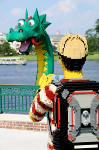
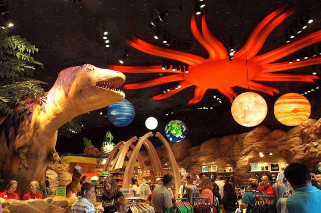

Melhores dicas

Downtown Disney: descobrindo a diversão fora dos parques

As impressionantes esculturas de lego espalhadas por Downtown Disney
Como eu já disse no post sobre o Boardwalk, a Disney World vai muito além dos parques. Um dos pontos mais populares do complexo é o Downtown Disney, que seria equivalente ao centrinho da “cidade Disney”. Muita gente não dá nada pra Downtown Disney, achando que lá só tem um monte de loja com as mesmas coisas que são vendidas nos parques, mas aparências enganam, sabia? Além das muitas lojinhas, Downtown Disney possui uma baladinha, um Cirque de Soleil, cinemas e diversas opções de alimentação para todos os gostos e bolsos.
E mesmo quando falamos das lojas, em Downtown Disney você encontra muito mais do que nos parques. Além de ter a maior loja do complexo todo, a World of Disney, lá você encontra lojas super específicas: uma só de pins, outra só de coisas de Natal, uma só com artigos esportivos, uma outra de itens de cozinha, de doces…bom, já estou entregando tudo de bandeja, né? A verdade é que o complexo é bem maior do que aparenta ser, por isso, aqui vai uma lista dos pontos que se destacam, aos meus olhos, nas categorias compras, alimentação e entretenimento.
Se você quiser fazer o download desse post em PDF para imprimir, clique aqui.
 ALIMENTAÇÃO
ALIMENTAÇÃO
Rainforest Cafe: é um restaurante todo ambientado como uma floresta. De tempos em tempos os animais começam a fazer barulho e fica tudo uma loucura. É bem divertido (principalmente se tiver crianças no seu grupo) e a comida é gostosa.
Planet Hollywood: Famoso em todo mundo, o Planet Hollywood de Downtown Disney fica dentro de um globo e como em outras cidades, possuí vários figurinos de filmes famosos espalhados pelo restaurantes. Lá você come de tudo, mas o forte são os drinks e os sanduíches. Vale a pena experimentar.
Earl of Sandwich: minha família é APAIXONADA por este lugar. Os sanduíches são maravilhosos, muito caprichados e de um bom tamanho. Além disso,as sopas e as sobremesas também valem muito a pena.
T-Rex: assim como o Rainforest, o T-Rex é um restaurante completamente tematizados, mas o assunto aqui é a pré-história. São vários dinossauros espalhados pelo salão e a criançada se diverte.

Wolfgang Puck Express: restaurante bem variado, tanto no cardápio como no preço.
Ghirardelli Ice Cream & Chocolate Shop: na loja da famosa marca originária de São Francisco, você vai encontrar sundaes incríveis e chocolates maravilhosos…valem cada caloria ingerida!
Goofy’s Candy Company: Loja de docinhos bem bons. Experimente os mini pretzels cobertos de chocoalte! Eu adoro!
 ENTRETENIMENTO
ENTRETENIMENTO
DisneyQuest: um lugar cheio de jogos para todos os gostos. Eu mesma que não sou fã dessas coisas já me diverti bastante no DisneyQuest.
Não tem brincadeira para adulto e para criança. Todo mundo se diverte nos jogos e simuladores do Disney Quest
House of Blues: é um bar/baladinha muito frequentado pelos próprios funcionários da Disney no tempo livre, principalmente aos domingos.
AMC Movies: É um cinema. Bom, para quem adora filmes e quer ver um antes de ser lançado no Brasil. Além de ser um bom descanso entre os parques e compras, passando a tarde em Downtown Disney.
La Nouba By Cirque du Soleil: Cirque du Soleil dispensa apresentações, né?
Passeio de Balão: eu ainda não fui, mas dizem que é um passeio bem bonito, com uma vista maravilhosa.
 COMPRAS
COMPRAS
World of Disney: simplesmente a maior loja de todo o complexo Disney. Tem diversos departamentos como meninos, meninas, artigos de cozinha, ursinhos de pelúcia, doces e lá dentro você também encontra uma unidade da Bibbidi Bobbidi Boutique, o salão de beleza que as meninas se arrumam como uma princesa. A outra unidade desse salão fica dentro do castelo da Cinderella, no Magic Kingdom.
Once Upon a Toy: uma loja enorme de brinquedos que vão de bonecas a video games.
Disney’s Days of Christmas: especializada em decoração de natal que fica aberta o ano inteiro. Vale a pena dar uma passadinha para comprar um item para a decoração do seu próximo natal.
Disney’s Pin Traders: muita gente acha que Pin é uma coisa meio sem sentido mas as vezes a gente sente um impulso de comprá-los mesmo assim. Aqui é o lugar certo para você escolher o que mais combina com você e encontrar algumas coleções exclusivas.
Lego Imagination Center: loja da Lego que fica em Downtown Disney.
World of Disney em Downtown Disney. A loja é tão grande que é bem fácil se perder.
Marketplace Fun Finds: essa loja tem uma proposta muito legal e principalmente quando você quer comprar uma lembrancinha pra alguém mas não quer gastar demais. Aqui, eles dividem os produtos por preço, ajudando você fazer compras mais direcionadas.
Mickey’s Pantry: loja de itens de cozinha. Eu que amo cozinhar, fico doida nessa loja, mas cuidado! Nem tudo que a Disney vende de cozinha é bom. Já me queimei tirando bolo do forno com a luva porcaria deles. Compre itens mais básicos e decorativos.
Team Mickey: loja de itens esportivos muito grande, com artigos de diversos esportes e também, produtos da Disney.
Orlando Harley-Davidson: loja da marca Harley-Davidson para os fãs exclusiva de Downtown Disney.